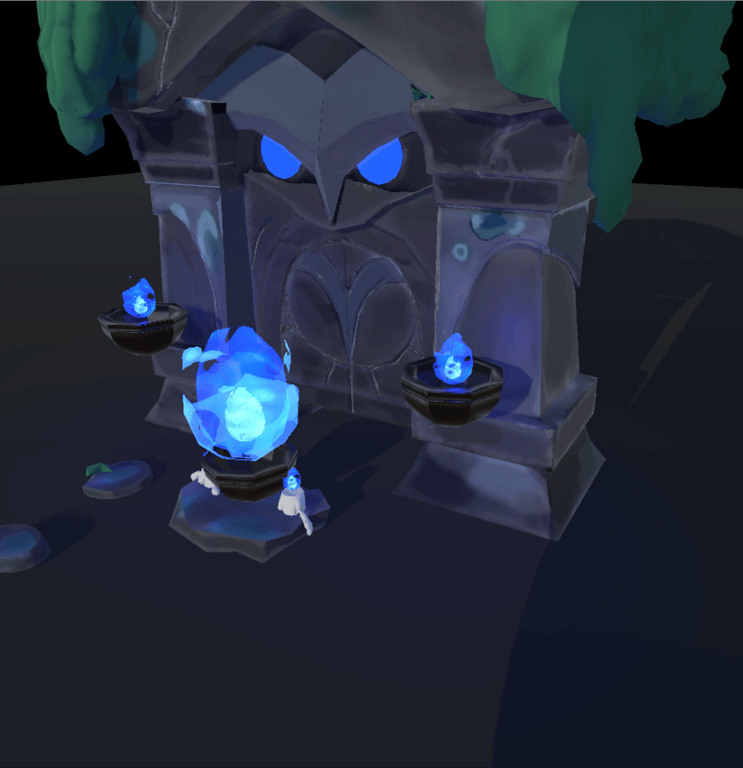

Owl Shrine by Marina Papetti
3D Modeling
Thanks to Marina Papetti for the concept art, and the permission to model and post this! Please see the ArtStation page and Marina's profile.
This was made as part of an Environment Art Challenge on the polycount forums. I adjusted my model based on feedback from Fabi_G.
I uploaded this to my website and itch.io because of the GLSL shaders, which would not be supported on SketchFab. Thanks for checking it out!